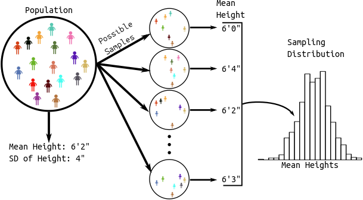

Course Overview
Learning Objectives
- Overview of the course plus some reminders from STAT 202/203/204
- P-values/confidence intervals.
- \(t\)-tests for means in R.
- Proportion tests in R.
Probability and Distributions in R.
Distribution: The possible values of a variable and how often it takes those values.
A density describes the distribution of a quantitative variable. You can think of it as approximating a histogram. It is a curve where
- The area under the curve between any two points is approximately the probability of being between those two points.
- The total area under the curve is 1 (something must happen).
- The curve is never negative (can’t have negative probabilities).
The density of birthweights in America:

The distribution of many variables in Statistics approximate the normal distribution.
- If you know the mean and standard deviation of a normal distribution, then you know the whole distribution.
- Larger standard deviation implies more spread out (larger and smaller values are both more likely).
- Mean determines where the data are centered.
Normal densities with different means.
Normal densities with different standard deviations

Density Function (height of curve, NOT probability of a value).
dnorm(x = 2, mean = 1, sd = 1)[1] 0.242Random Generation (generate samples from a given normal distribution).
samp <- rnorm(n = 1000, mean = 1, sd = 1) head(samp)[1] 0.3735 1.1836 0.1644 2.5953 1.3295 0.1795Warning: `qplot()` was deprecated in ggplot2 3.4.0.
Cumulative Distribution Function (probability of being less than or equal to some value).
pnorm(q = 2, mean = 1, sd = 1)[1] 0.8413
Quantile function (find value that has a given the probability of being less than or equal to it).
qnorm(p = 0.8413, mean = 1, sd = 1)[1] 2Exercise: In Hong Kong, human male height is approximately normally distributed with mean 171.5 cm and standard deviation 5.5 cm. What proportion of the Hong Kong population is between 170 cm and 180 cm?
The \(t\)-distribution shows up a lot in Statistics.
- It is also bell-curved but has “thicker tails” (more extreme observations are more likely).
- It is always centered at 0.
- It only has one parameter, called the “degrees of freedom”, which determines how thick the tails are.
- Smaller degrees of freedom mean thicker tails, larger degrees of freedom means thinner tails.
- If the degrees of freedom is large enough, the \(t\)-distribution is approximately the same as a normal distribution with mean 0 and variance 1.
\(t\)-distributions with different degrees of freedom:
Density Function
dt(x = -6, df = 2)[1] 0.004269Random Generation
samp <- rt(n = 1000, df = 2) head(samp)[1] 0.89857 -1.07176 0.09639 0.79371 -0.42428 -0.64561
Cumulative Distribution Function
pt(q = 2, df = 2)[1] 0.9082Quantile Function
qt(p = 0.9082, df = 2)[1] 1.999There are many other distributions implemented in R. To see the most common, run:
help("Distributions")
All of Statistics
Observational/experimental Units: The people/places/things/animals/groups that we collect information about. Also known as “individuals” or “cases”. Sometimes I just say “units”.
Variable: A property of the observational/experimental units.
- E.g.: height of a person, area of a country, marital status.
Value: The specific level of a variable for an observational/experimental unit.
- E.g.: Bob is 5’11’’, China has an area of 3,705,407 square miles, Jane is divorced.
Quantitative Variable: The variable takes on numerical values where arithmetic operations (plus/minus/divide/times) make sense.
- E.g.: height, weight, area, income.
- Counterexample: Phone numbers, social security numbers.
Categorical Variable: The variable puts observational/experimental units into different groups/categories based on the values of that variable.
- E.g.: race/ethnicity, marital status, religion.
Binary Variable: A categorical variable that takes on only two values.
- E.g.: dead/alive, treatment/control.
Population: The collection of all observational units we are interested in.
Parameter: A numerical summary of the population.
- E.g.: Average height, proportion of people who are divorced, standard deviation of weight.
Sample: A subset of the population (some observational units, but not all of them).
Statistic: A numeric summary of the sample.
- E.g.: Average height of the sample, proportion of people who are divorced in the sample, standard deviation of weight of a sample.
Graphic:

Sampling Distribution: The distribution of a statistic over many hypothetical random samples from the population.

All of Statistics: We see a pattern in the sample.
- Estimation: Guess the pattern in the population based on the sample. Guess a parameter with a statistic. A statistic which is a guess for a parameter is called an estimate.
- Hypothesis Testing: Ask if the pattern we see in the sample also exists in the population. Test if a parameter is some value.
- Confidence Intervals: Quantify our (un)certainty of the pattern in the population based on the sample. Provide a range of likely parameter values.
We will go through a lot of examples of this below
library(tidyverse) library(broom)Exercise: Read about the
bonedendata here What are the observational units? What are the variables? Which are quantitative and which are categorical?Exercise: Read about the
leaddata here. What are the observational units? What are the variables? Which are quantitative and which are categorical?
Pattern: Mean is shifted (one quantitative variable)
Example: The
bonedendata explores the difference in bone density between a heavier and a lighter smoking twin.Observational Units: The twins.
Population: All twins where one smokes more than the other.
Sample: The 41 twins in our study.
Variable: The difference in lumbar spine density (in g/cm2) between the twins. We derived this quantitative variable by subtracting one density from another.
boneden <- read_csv("https://dcgerard.github.io/stat_320/data/boneden.csv") boneden <- mutate(boneden, ls_diff = ls1 - ls2)Pattern: Use a histogram/boxplot to visualize the shift from 0.
ggplot(boneden, aes(x = ls_diff)) + geom_histogram(bins = 20, fill = "white", color = "black") + geom_vline(xintercept = 0, lty = 2) + xlab("Difference in Bone Density")Graphic:
Parameter of interest: Mean difference in bone density for all twins.
Estimate: Use sample mean
boneden %>% summarize(meandiff = mean(ls_diff))# A tibble: 1 × 1 meandiff <dbl> 1 0.03590.03585 is our “best guess” for the parameter, but it is almost certainly not the value of the parameter (since we didn’t measure everyone).
Hypothesis Testing:
- We are interested in if the mean difference is different from 0.
- Two possibilities:
- Null Hypothesis: Mean is not different from 0, we just happened by chance to get twins that had some difference in density.
- Alternative Hypothesis: Mean is different from 0.
- Strategy: We calculate the probability of the data assuming possibility 1 (called a \(p\)-value). If this probability is low, we conclude possibility 2. If the this probability is high, we don’t conclude anything.
- p-value: the probability that you would see data as or more supportive of the alternative hypothesis than what you saw assuming that the null hypothesis is true.
Graphic:
The distribution of possible null sample means is given by statistical theory. Specifically, the \(t\)-statistic (mean divided by the standard deviation of the sampling distribution of the mean) has a \(t\) distribution with \(n - 1\) degrees of freedom (\(n\) is the sample size). It works as long as your data aren’t too skewed or if you have a large enough sample size.
Function:
t.test()tout <- t.test(ls_diff ~ 1, data = boneden) toutOne Sample t-test data: ls_diff t = 2.6, df = 40, p-value = 0.01 alternative hypothesis: true mean is not equal to 0 95 percent confidence interval: 0.007986 0.063721 sample estimates: mean of x 0.03585The
tidy()function from the broom package will format the output of common procedures to a convenient data frame.tdf <- tidy(tout) tdf$estimatemean of x 0.03585tdf$p.value[1] 0.01299We often want a range of “likely” values. These are called confidence intervals.
t.test()will return these confidence intervals, giving lowest and highest likely values for the mean difference in bone density:tdf$conf.low[1] 0.007986tdf$conf.high[1] 0.06372Interpreting confidence intervals:
- CORRECT: We used a procedure that would capture the true parameter in 95% of repeated samples.
- CORRECT: Prior to sampling, the probability of capturing the true parameter is 0.95.
- WRONG: After sampling, the probability of capturing the true parameter is 0.95.
- Because after sampling the parameter is either in the interval or it’s not. We just don’t know which.
- WRONG: 95% of twins have bone density differences within the bounds of the 95% confidence interval.
- Because confidence intervals are statements about parameters, not observational units or statistics.
Graphic:

Intuition: Statistical theory tells us that the sample mean will be within (approximately) 2 standard deviations of the population mean in 95% of repeated samples. This is two standard deviations of the sampling distribution of the sample mean, not two standard deviations of the sample. So we just add and subtract (approximately) two standard deviations of the sampling distribution from the sample mean.
Exercise: The
birthweightdata available here contains the birthweights (in ounces) of 1000 newborns born in a Boston area hospital. Wikipedia says the average birthweight for individuals of European and African descent is 123 ounces. Does this Boston hospital have the same mean as what Wikipedia says? Explain.
Pattern: Means of two groups are different (one quantitative, one binary)
Example: IQ differences between children with high levels of lead (
exposed) and those with low levels of lead (control).lead <- read_csv("https://dcgerard.github.io/stat_320/data/lead.csv") lead |> select(Group, iqf) |> glimpse()Rows: 124 Columns: 2 $ Group <chr> "control", "control", "control", "control", "control", "control"… $ iqf <dbl> 70, 85, 86, 76, 84, 96, 94, 56, 115, 97, 77, 128, NA, 80, 118, 8…Observational Units: Children
Population: All children
Sample: The 120 children for whom we have both lead and IQ measurements.
Variables: The lead level group (binary/categorical) and the full scale IQ (quantitative).
Pattern: Use a boxplot to see if the groups differ.
ggplot(lead, aes(x = Group, y = iqf)) + geom_boxplot()Parameter of interest: Difference in mean IQ levels between the control and exposed groups.
Estimate: The difference in mean IQ between the two groups in our sample.
lead |> group_by(Group) |> summarize(meaniq = mean(iqf, na.rm = TRUE))# A tibble: 2 × 2 Group meaniq <chr> <dbl> 1 control 92.6 2 exposed 88.092.55 - 88.02[1] 4.53The control group is about 4.5 points higher on average
Hypothesis Test:
- We want to know if the difference in the mean IQ in the two groups is actually different.
- Two possibilities:
- Null Hypothesis: The mean IQs are the same in the two groups. We just happened by chance to get a lower IQ lead group and a higher IQ control group.
- Alternative Hypothesis: The mean IQ are different in the two groups.
- Strategy: We calculate the probability of the data assuming possibility 1 (called a p-value). If this probability is low, we conclude possibility 2. If the this probability is high, we don’t conclude anything.
Graphic:
The distribution of possible null sample means comes from statistical theory. The t-statistic has a \(t\) distribution with a complicated degrees of freedom.
Function:
t.test(). The quantitative variable goes to the left of the tilde and the binary variable goes to the right of the tilde.tout <- t.test(iqf ~ Group, data = lead) tdf <- tidy(tout) tdf$estimate[1] 4.532tdf$p.value[1] 0.07966t.test()also returns a 95% confidence interval for the difference in means. This has the exact same interpretation as in the previous section.c(tdf$conf.low, tdf$conf.high)[1] -0.5448 9.6094Assumptions (in decreasing order of importance):
- Independence: conditional on group, IQ of one child doesn’t give us any information on the IQs of any other children (reasonable).
- Approximate normality: The distribution of IQ’s is bell-curved in group. Doesn’t matter for moderate-large sample sizes because of the central limit theorem.
Exercise: Is there a difference between control and exposed groups when it comes to the finger-wrist tapping test in the dominant hand (
maxfwt).
Pattern: Proportion is shifted (one binary variable).
The exposed individuals were mostly males. There were 30 males and 16 females. In the US, about 51.22% of all births are boys. Are boys more likely to be recruited to the study than girls?
lead |> filter(Group == "exposed") |> group_by(sex) |> summarize(n = n())# A tibble: 2 × 2 sex n <chr> <int> 1 female 16 2 male 30Observational Units: U.S. children exposed to lead
Population: All U.S. children exposed to lead
Sample: The 46 children in our sample who were exposed to lead.
Variable: Sex (
male/female)Pattern: Calculate sample proportion.
30 / 46[1] 0.6522Parameter of interest: Proportion of children exposed to lead who are boys
Estimate with sample proportion, 0.6522
Hypothesis Testing:
- We are interested in if our sample had some bias in selecting more boys.
- Two possibilities:
- Null Hypothesis: Probability of a boy being included in the sample is 0.5122. We just happened by chance to get a lot more boys.
- Alternative Hypothesis: There is bias and the probability of a boy being in the sample is greater than for a girl(because boys are more likely to be exposed to lead, or because they were more likely to be recruited to the study).
- Strategy: We calculate the probability of the data assuming possibility 1 (called a p-value). If this probability is low, we conclude possibility 2. If this probability is high, we don’t conclude anything.
Graphic:
The distribution of possible null sample proportions comes from statistical theory. The number of successes has a binomial distribution with success probability 0.5122 and size parameter equal to the sample size. The sample proportion is the number successes divided by the sample size.
Function:
prop.test()(when you have a large number of both successes and failures) orbinom.test()(for any number of successes and failures).bout <- tidy(binom.test(x = 30, n = 46, p = 0.5122)) bout %>% select(estimate, p.value, conf.low, conf.high)# A tibble: 1 × 4 estimate p.value conf.low conf.high <dbl> <dbl> <dbl> <dbl> 1 0.652 0.0757 0.498 0.786pout <- tidy(prop.test(x = 30, n = 46, p = 0.5122)) pout %>% select(estimate, p.value, conf.low, conf.high)# A tibble: 1 × 4 estimate p.value conf.low conf.high <dbl> <dbl> <dbl> <dbl> 1 0.652 0.0798 0.497 0.782Exercise: Is there a sex bias for the control group?